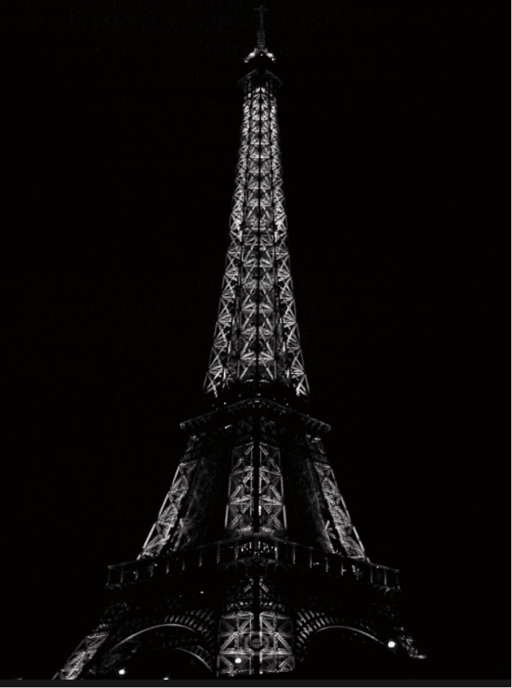
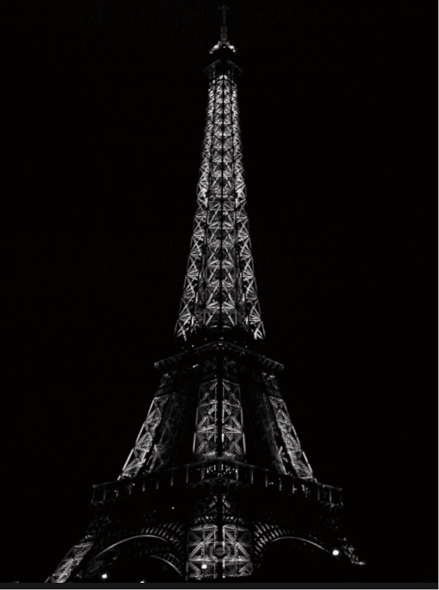
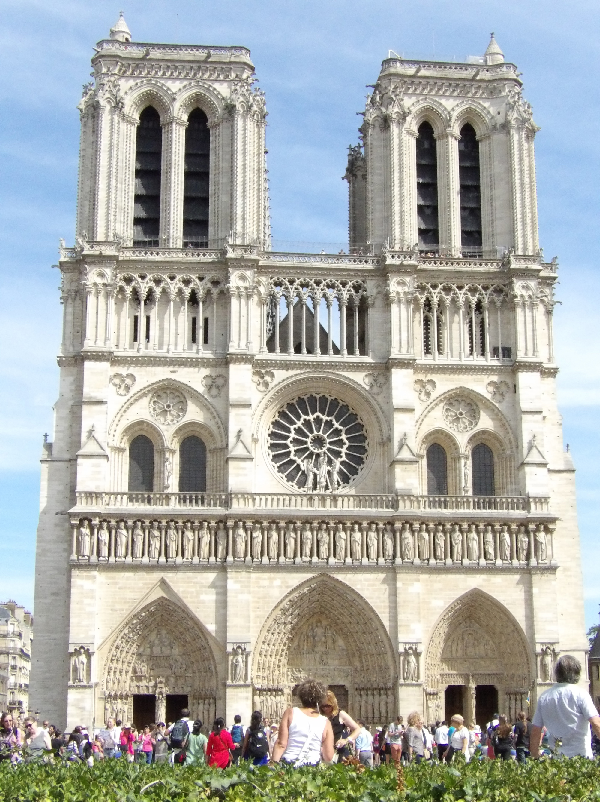

Machu Picchu, Peru


Geographical Location: South America
Machu Picchu is an ancient Incan citadel located in the Andes Mountains of Peru, South America. It is renowned for its breathtaking beauty, architectural ingenuity, and historical significance. Believed to have been built in the 15th century during the height of the Inca Empire, Machu Picchu served as a royal estate or religious retreat for the Incan ruler Pachacuti.
Machu Picchu's remote location and mysterious abandonment in the decades following its construction have contributed to its status as a UNESCO World Heritage Site and one of the New Seven Wonders of the World. The site is characterized by its well-preserved stone structures, including temples, plazas, residential buildings, and intricate terraces carved into the mountainside. The precise construction methods used to build Machu Picchu without the use of mortar have puzzled archaeologists for decades. The entire complex is surrounded by stunning panoramic views of the surrounding valleys and mountains.
Photo Gallery

A view of Machu Picchu with flowers and greenery in the foreground. Huayna Picchu is visible in the background.

A dark and moody view of the Machu Picchu ruins on a cloudy day. The Inca terraces are covered in bright green grass and the Huayna Picchu Mountain looms in the background.

A llama walks around the ruins in a fenced off area. The llama is dark and light colored. The view of Machu Picchu is cloudy but visible.

A wide shot of the stone architecture and Inca walls leading up to the Guardhouse. The fog is sitting in the ruins.

A view of the famous Huayna Picchu Mountain and the ruins atop it. The main ruins of Machu Picchu are also visible in the lower half of the photo.
Paris, France
 

Geographical Location: Europe
Paris is one of the oldest cities in Europe and the city of romance. With a vast amount of cultural history, lined with iconic landmarks, intimate scenes, and world-renowned art museums.
Paris welcomes millions of visitors annually, each drawn to its exquisite charm and beautiful ambiance. Enjoy tasty treats and exquisite cuisine await, while city landmarks illuminate the night sky.
Photo Gallery

Champs Elysées, on a street, slightly cloudy in Paris, France

Eiffel tower in front of a clear blue sky, taller structure in Paris, France
Notre Dame Cathedral with people viewing it in front of a lightly cloudy sky in Paris, France

The Louvre Museum lit up in the night in Paris, France

Palace of Versailles with gardens in front of it on a lightly cloudy day in Paris, France
Sofia, Bulgaria


Geographical Location: Europe
Sofia is the capital city of Bulgaria, a country located in Eastern Europe. It is part of the European Union and the primary language spoken is Bulgarian. The city's population is around 1.3 million. In addition to its urban structures, Sofia also contains a mountain peak called “Vitosha”.
Vitosha is located 30 minutes from the capital's center, and can be reached by foot, car, and by lift. The peak has an elevation of 7,520 feet and during the summer months the average temperature is around 64 degrees fahrenheit. This makes it a great sight for any type of traveler who seeks the outdoors.
Photo Gallery

Located in the city's center, St. Alexander Nevsky Cathedral displays some of Sofia's grand architecture.

Vitosha boulevard is often packed with both locals and tourists and contains shops, restaurants, live music, and great views.

The peak of Vitosha mountain offers a great view of Sofia from above.

A picturesque street giving insight into the locals' lives and the city's public transport trams.

One of Sofia's famous roads, this street is paved with an interesting material: yellow cobblestones. Being one of the first streets in the entire city, it was first paved in 1907 and continues to be maintained to this day.
San Francisco, California


Geographical Location: North America
San Francisco is a great location to visit with many landmarks, including the Golden Gate Bridge and Alcatraz. Located in Northern California, San Francisco is one of the most populated cities in California with a population of 815,000. The city is also a center of culture and industry. San Francisco is home to a thriving tech industry.
San Francisco has many trails and parks where you can hike or enjoy a walk. The Presidio is a large park with hiking trails and paths surrounding the Golden Gate Bridge area. One can see picturesque views of the bay and its wildlife.
Photo Gallery

Image of the Alcatraz prison.

Picture of Lombard street in San Francisco.

Image of the homes known as the Painted Ladies. A row of colorful homes that are adjacent to a park. They are known for being in Full House.

Image of the Palace of Fine Arts in San Francisco, a large structure surrounded by a pleasant park.

Steep hill in San Francisco with cars on it.
Giza, Egypt


Geographical Location: Africa
Giza is located on the western bank of the Nile River, and it is a historically and culturally significant city in Egypt. It is home to the Great Pyramids and the Sphinx, which are ancient wonders of the world. These monuments also raise many questions about how advanced the ancient Egyptians truly were. Giza has recently become a bustling city full of tourists and adventurers seeking to see the ancient lure of Egypt.
Giza is a city that is very unique for a lot of reasons. One reason why is the ability to be a vibrant city that also is able to blend in its vast historical heritage within its city life . One one side you can see the pyramids , and on the other you can see the bustling night life of Egypt. This city is also very close by to the capital of Egypt , which allows tourists to not only visit Giza , but they also gain the opportunity of going to the nearby capital and getting any work needed done.
Photo Gallery

Picture of the sphinx

Picture of the “Nile River along side the sand dunes

Picture of the city surrounding the pyramid

Picture of the main pyramids in Giza

Picture of a long corridor inside the pyramids
Tokyo, Japan


Geographical location: Asia
Tokyo is located on the east side of Japan's Honshu Island. It is the capital of Japan as well as the most populated city, home to 14 million people. Tokyo has the largest economy in the world of a city by Gross Domestic Product.
Tokyo is known for being one of the most modern cities in the world. Tokyo is sprawling with high skyscrapers all filled with lights and advertisements on the sides along with thousands of people inside of them. Tokyo is also known for historic shrines and temples surrounding the city which have been around for centuries. The oldest temple in Tokyo is called the Sensoji at Asakusa.
Photo Gallery

Located just outside of Tokyo, Mount Fuji is the largest mountain in Japan.

Tsukiji is the most well known fish market in the world. Located in Tokyo, patrons will arrive at 5 am every morning to purchase fish for the day.

Located in Asakusa, Sensoji is the oldest temple in Tokyo being built in 645 AD.

Built in 1958, Tokyo tower has become the most popular landmark in Tokyo. Over 150 million people have visited Tokyo tower since it was first built.

Shinjuku Gyoen is a national garden and is known as one of the most beautiful gardens in the world featuring its cherry blossom trees.